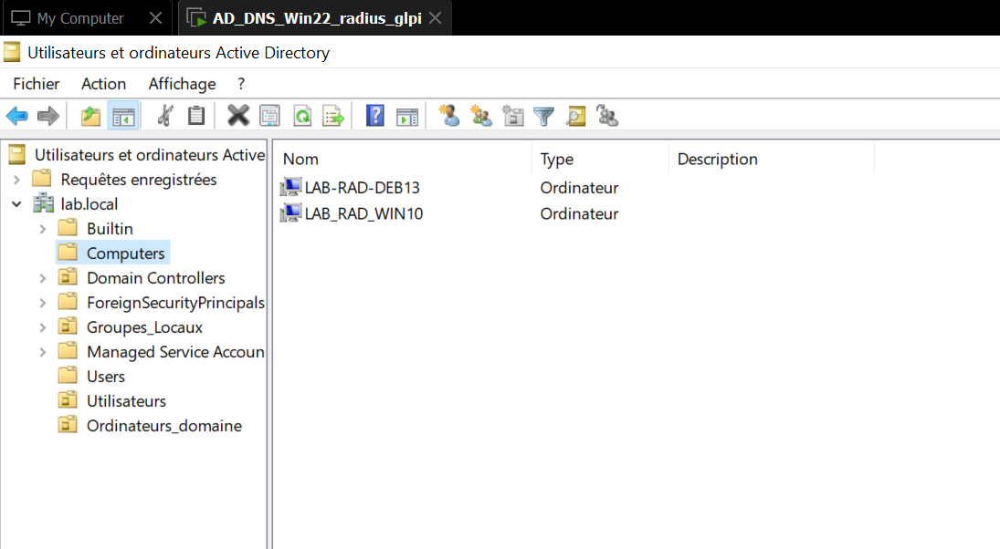
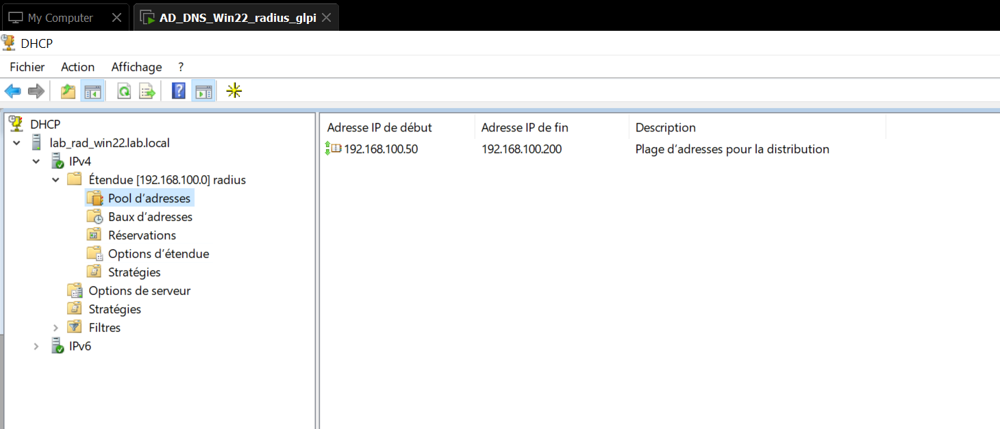
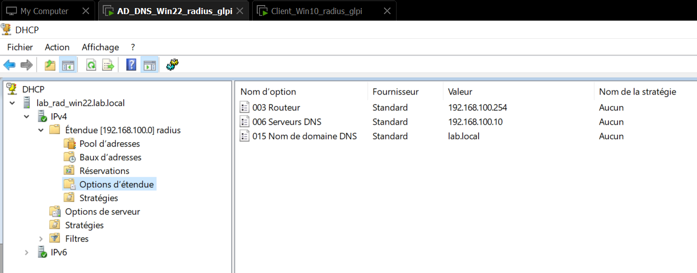
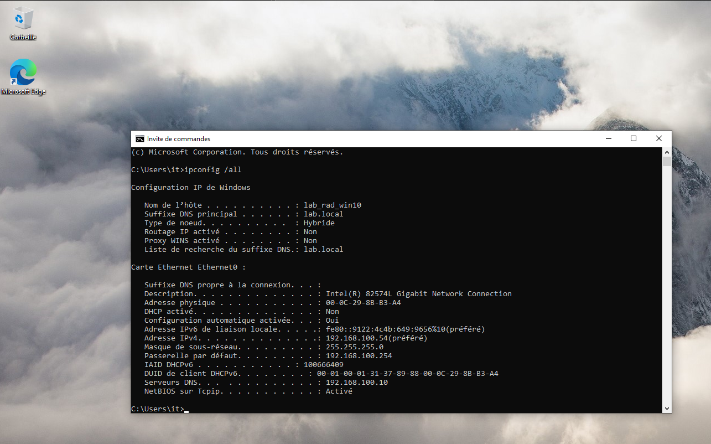
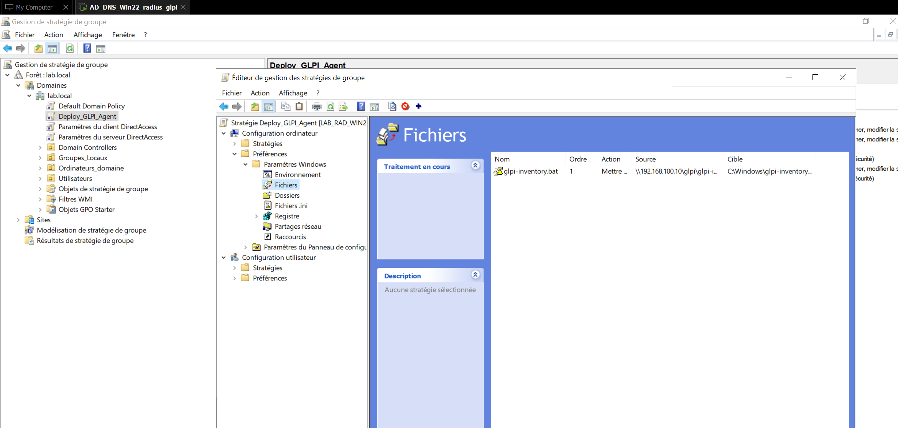
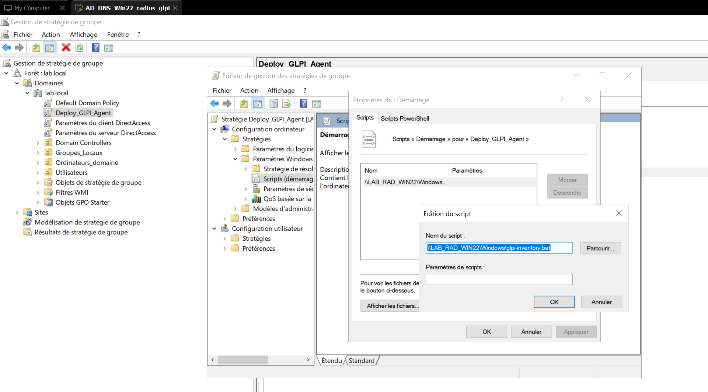
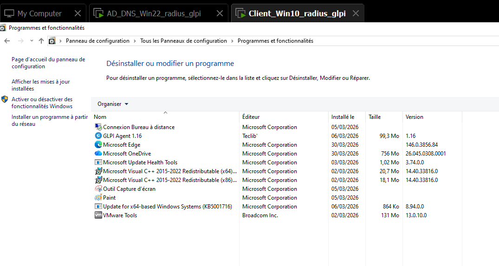

Active Directory & DHCP
Lab complet en environnement virtualisé VMware. Un serveur Windows Server 2022 assure les rôles
AD DS, DNS et DHCP sur le domaine lab.local.
Deux clients sont joints au domaine : un poste Windows 10 et une machine Debian 13.
Le déploiement de l'agent d'inventaire GLPI est automatisé via GPO pour tous les postes du domaine.
Schéma d'adressage
Le réseau du lab est en 192.168.100.0/24. Le serveur AD/DNS/DHCP héberge tous les services centraux. Les clients reçoivent leur configuration réseau via DHCP, à l'exception des postes à IP statique.
192.168.100.10 · Windows Server 2022
192.168.100.54 · Windows 10
Debian 13 · joint au domaine
Option DHCP 003 Routeur
Domaine et ordinateurs
Le domaine lab.local est configuré avec une forêt unique. Les machines clientes sont jointes au domaine et apparaissent dans l'OU Computers. Des OU supplémentaires organisent les groupes locaux et les ordinateurs du domaine.

Étendue et options
Une étendue DHCP nommée radius distribue les adresses
sur le réseau 192.168.100.0. Le pool va de .50 à
.200. Les options d'étendue fournissent
automatiquement la passerelle, le serveur DNS et le suffixe de domaine aux clients.


Configuration IP du poste Windows 10
La commande ipconfig /all sur le client
lab_rad_win10 confirme l'appartenance au domaine
lab.local, l'adresse IP statique attribuée et le serveur DNS
pointant vers le contrôleur de domaine (192.168.100.10).

Deploy_GLPI_Agent
Une GPO dédiée automatise le déploiement de l'agent d'inventaire GLPI sur l'ensemble des postes du domaine.
Elle fonctionne en deux étapes : d'abord copier le script batch depuis un partage réseau vers
C:\Windows\, puis l'exécuter au démarrage
de chaque machine via un script de stratégie ordinateur.


GLPI Agent déployé sur le client
Après application de la GPO, l'agent GLPI Agent 1.16 (Teclib') est bien installé sur le poste client Windows 10, visible dans Programmes et fonctionnalités. L'inventaire du parc est désormais automatiquement remonté vers le serveur GLPI.
